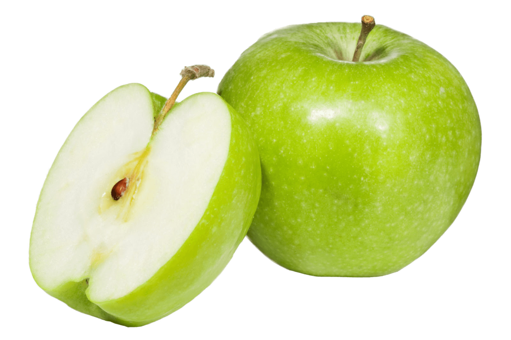

La Juguería Koky nació como un pequeño negocio familiar creado por los hermanos Polinar. Con esfuerzo y dedicación, lo que comenzó en un solo puesto fue creciendo, sumando a hijos y sobrinos que decidieron abrir sus propios locales manteniendo siempre el mismo nombre: Koky.
Hoy en día, la marca cuenta con varias tiendas en Lima Norte y se ha convertido en un referente por sus jugos naturales, su atención cercana y amable, la limpieza impecable y una presentación moderna que la distingue.
Esperamos que nuestra tienda sea de tu agrado y si tuvieras alguna consulta no dudes en escribirnos.
.png)
.png)
.png)
.png)
.png)
Seguir creciendo como una marca reconocida en Lima Norte, manteniendo la misma calidad, limpieza y trato amable, y llegar a más zonas sin perder la esencia familiar con la que empezó.
Brindar jugos naturales, extractos y otras bebidas saludables con buena atención, usando ingredientes frescos y en un ambiente limpio, buscando que el cliente quede satisfecho y quiera volver.
Los jugos salen rápido, sin hacerte esperar mucho. Ideal si estás apurado o solo de paso.
En Koky te atienden con buena actitud. Son amables, te explican si no sabes qué pedir y te recomiendan jugos o extractos según lo que necesites.
Todo se ve ordenado y limpio: la barra, las máquinas, los vasos y el lugar en general. Eso da confianza al cliente.